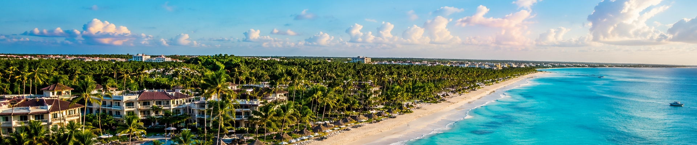
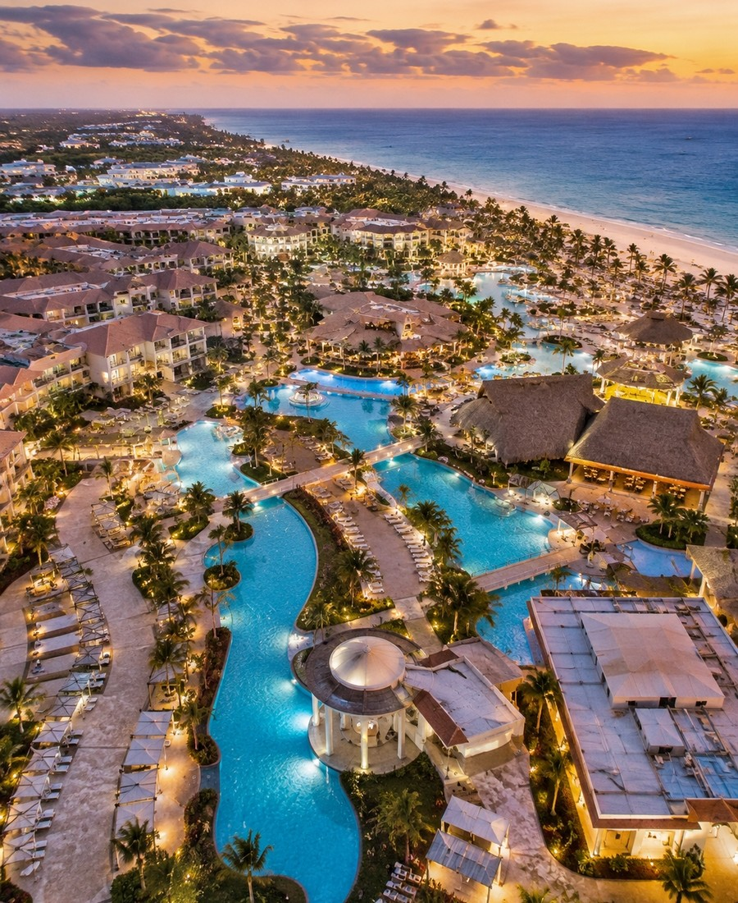
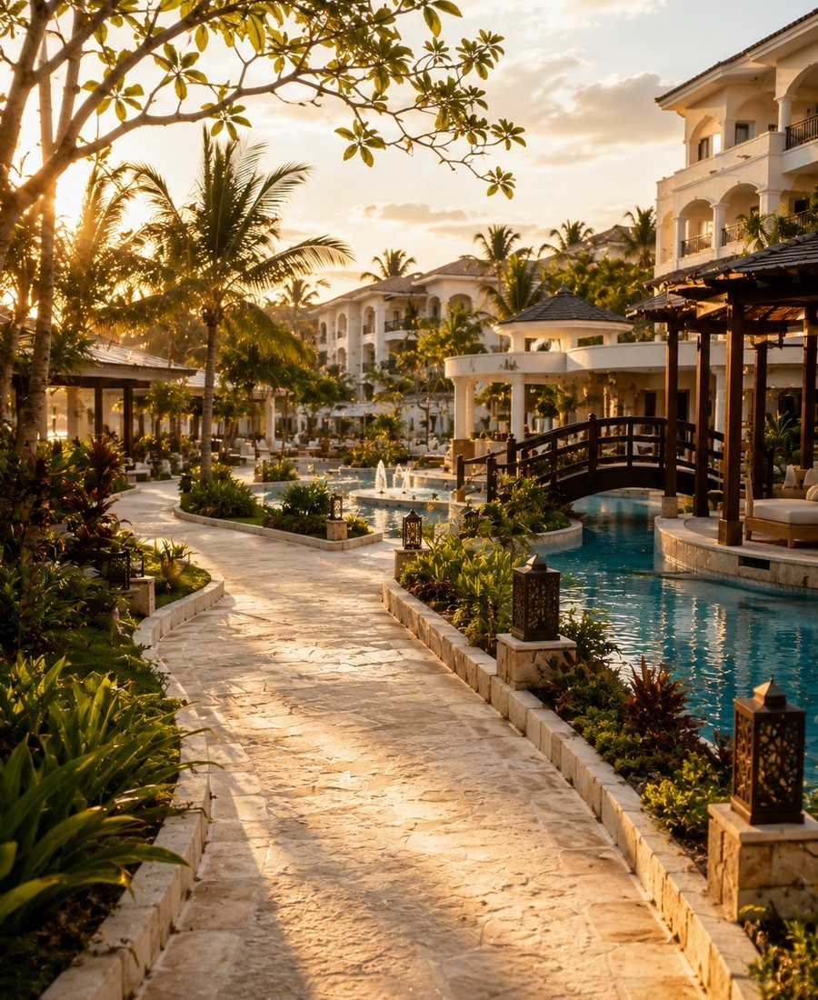
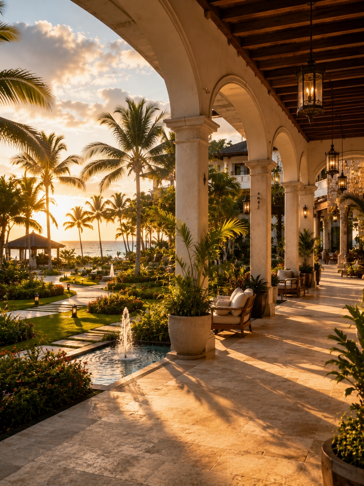
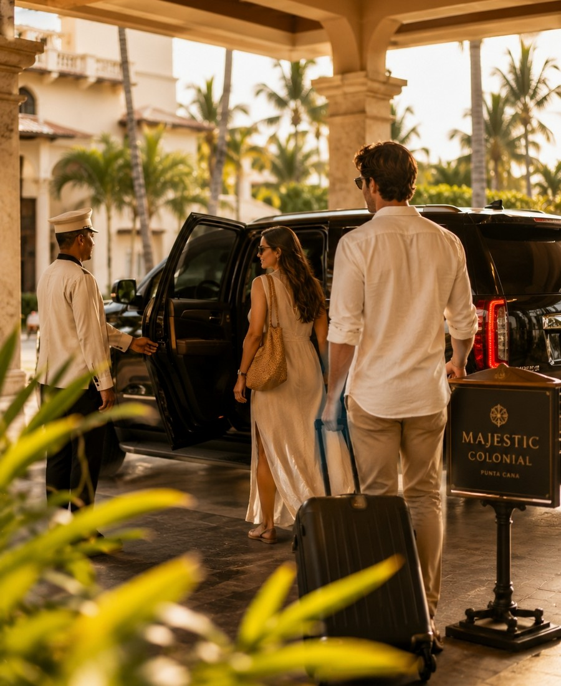
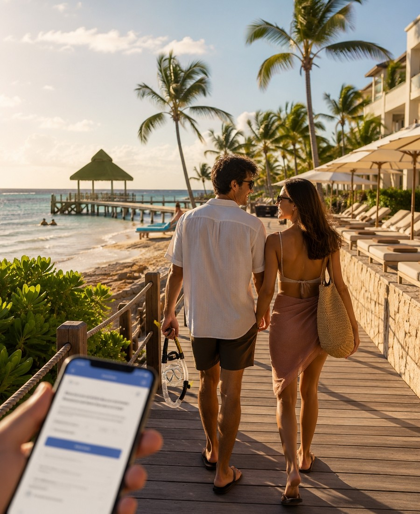
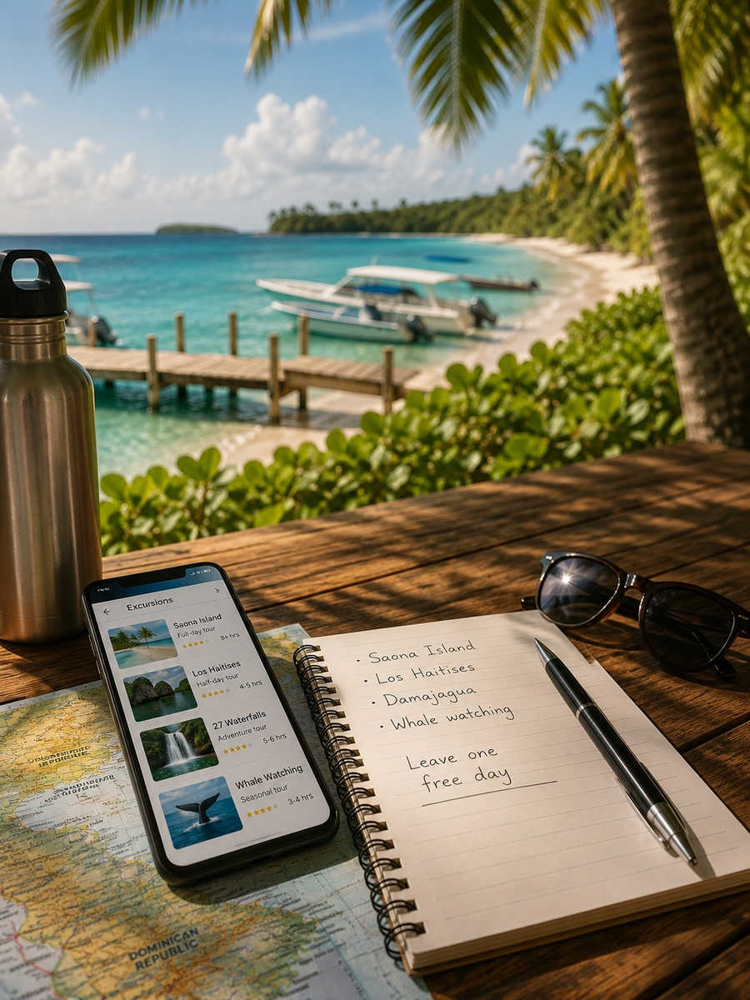
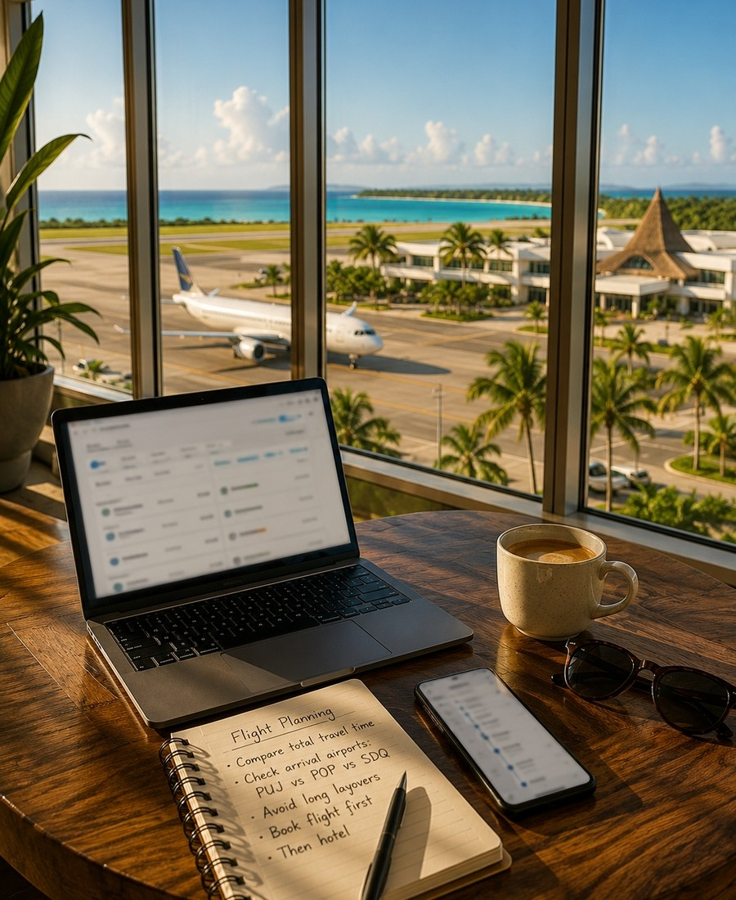

Плануйте поїздку в Домініканську Республіку впевнено. Порівняйте Punta Cana, Bayahibe, La Romana, Puerto Plata та інші курорти, а потім скористайтеся нашими гайдами по готелях, аеропортах, eSIM, бюджету та виїздах, щоб спланувати кожен крок.
Від редакції: цей хаб веде на основні матеріали Travel Radar LK. Деякі сторінки містять чітко позначені партнерські посилання.
Послідовність має значення. Спочатку зафіксуйте район і готель — потім вибудовуйте решту послуг навколо цього рішення.



Punta Cana пропонує нескінченні all-inclusive курорти з прямим доступом до пляжу та простою логістикою. Bayahibe та La Romana створюють більш спокійну, камерну карибську атмосферу з меншою кількістю туристів. Puerto Plata та Samaná міняють курортну зручність на мальовничі пейзажі та більш автентичний місцевий колорит.
Спочатку відкрийте карту вище, виберіть район, потім шукайте готелі з фільтром за цією зоною. Не приймайте рішення відштовхуючись лише від фотографії.

Більшість курортів Punta Cana знаходяться за 15–30 хвилин від аеропорту PUJ, що робить прибуття комфортним. Bayahibe та La Romana додають 45–70 хвилин. Puerto Plata (POP) та Samaná вимагають окремого маршруту перельотів або тривалої поїздки по землі. Довгий трансфер у день прибуття після трансатлантичного рейсу суттєво змінює враження від поїздки.
Бронюйте трансфер після підтвердження готелю — не раніше. Адреса посадки визначає клас автомобіля та ціну.
eSIM, встановлена до вильоту, означає, що карти, броні готелів і додатки для транспорту будуть працювати з першої хвилини після приземлення. Ніяких черг за SIM-картами в аеропорту. Ніяких сюрпризів у роумінгу.
Збережіть вашу домашню SIM-карту активною для банківських кодів та двофакторної автентифікації. Використовуйте eSIM лише для інтернету.

Надійний поліс із медичним покриттям від $50 000 — це спокійна база. Якщо ви плануєте орендувати скутер, займатися снорклінгом, дайвінгом або брати участь в активних турах, переконайтеся, що покриття цих активностей включено до вильоту — а не після інциденту.
Зберігайте номер поліса та телефон екстреної допомоги офлайн — не лише в електронній пошті.

Острів Saona, національний парк Los Haitises, 27 водоспадів Damajagua та тури для спостереження за китами швидко розпродуються у високий сезон. Перевірте логістику збору до бронювання: виїзд з готелю о 6 ранку на екскурсію в Santo Domingo на весь день змінює ваші плани на день до її початку.
Вибирайте за розміром групи, точкою збору та загальною тривалістю — а не лише за фотографією чи ціною.

Більшість курортних поїздок починається через міжнародний аеропорт Punta Cana (PUJ). Puerto Plata (POP) та Santo Domingo (SDQ) обслуговують свої регіони. Ціни на рейси сильно залежать від дати — зсув на два-три дні у гнучкому календарі може змінити вартість більше, ніж ніч у готелі.
Довгі стиковки в США чи Європі можуть зробити дешевий квиток набагато дорожчим. Перевіряйте загальний час у дорозі, а не лише тариф.